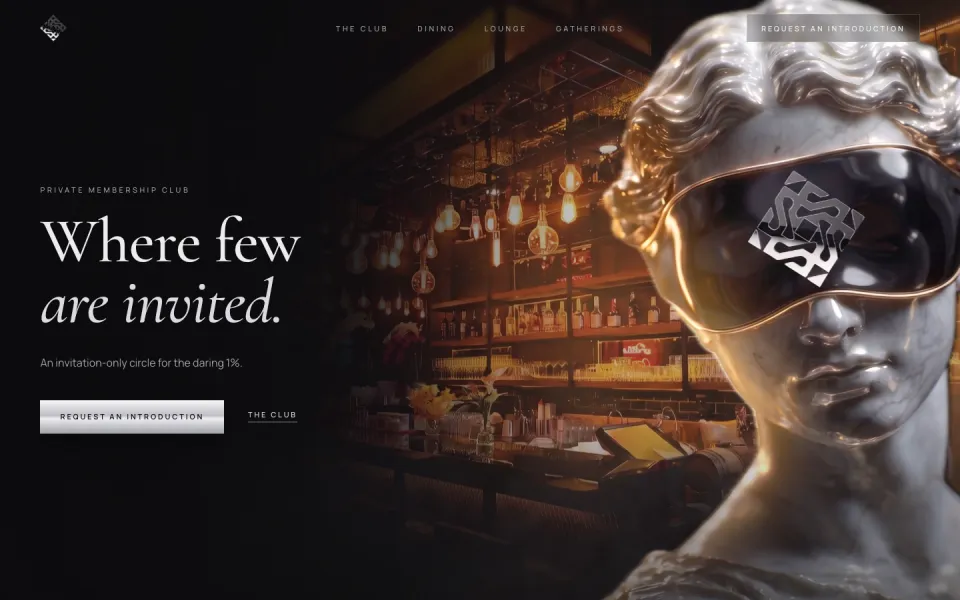
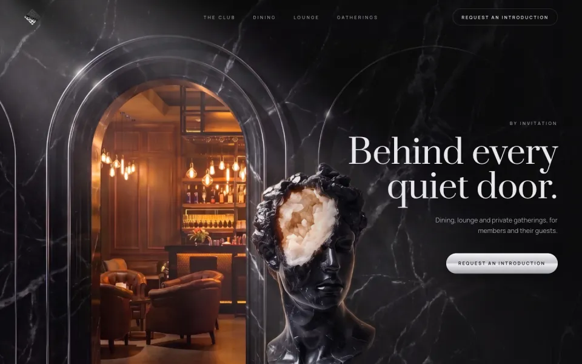
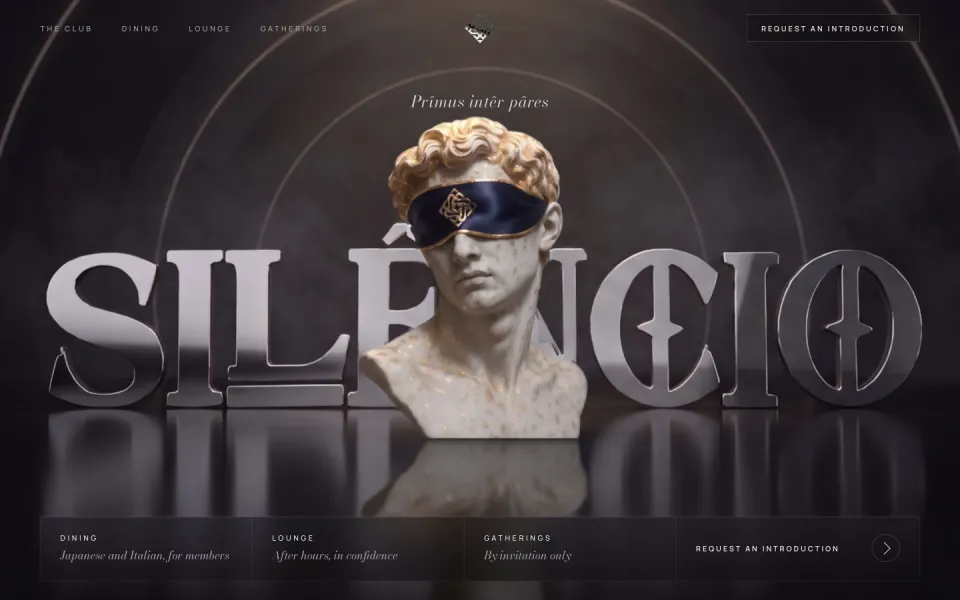
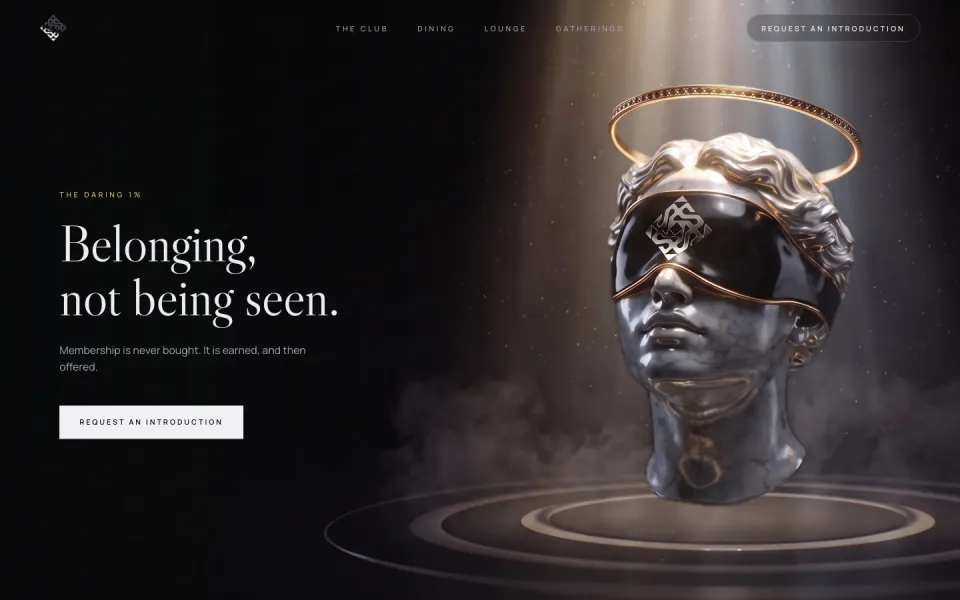
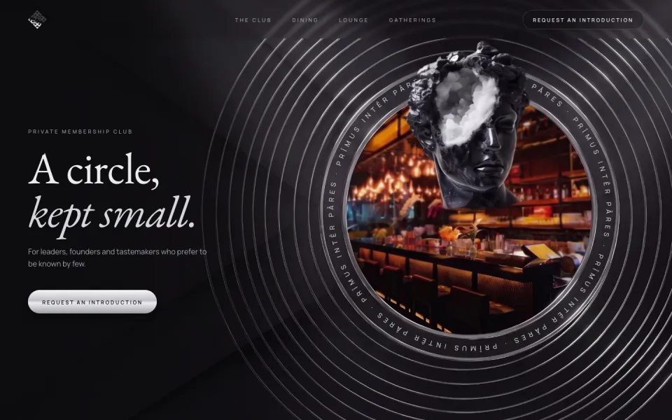
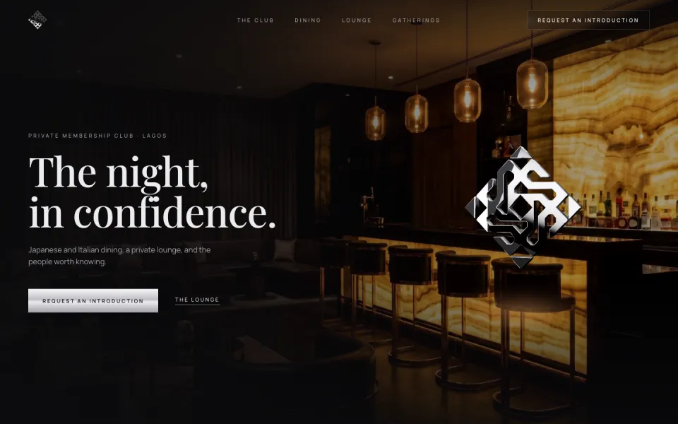
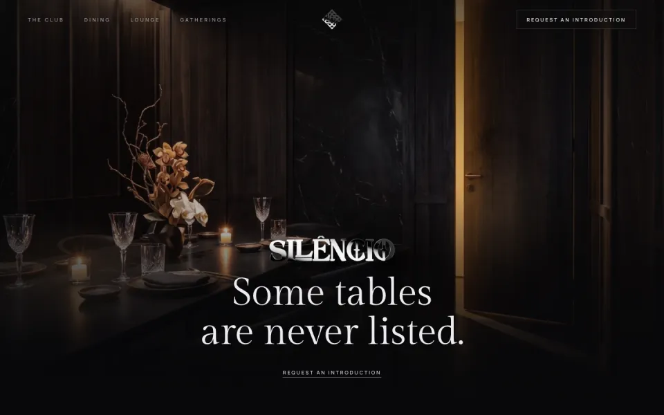
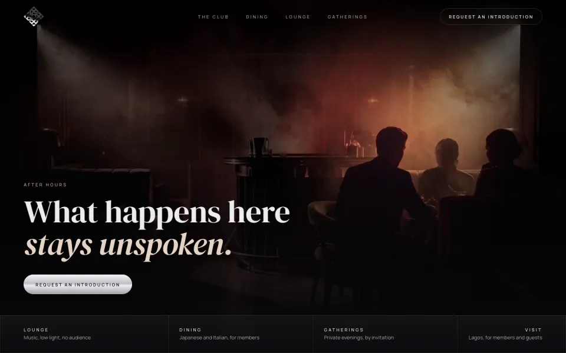

The figure and the bar





The room as the hero



Open each one at full screen and move the cursor: every option has depth and a motion of its own. Options 1 to 5 pair a Hellenistic figure with the bar; 6 to 8 use the interior as the full background.
The figure and the bar





The room as the hero


